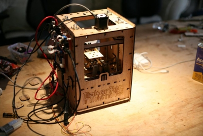

Ya está encargada nuestra primera Reprap. En realidad no es la misma Reprap que se utilizó en el taller del Medialab-prado, sino que es la CupCake Cnc, que acaba de empezar a vender la empresa Makerbots Industries fundada por Zach Smith, uno de los instructores del taller.
Es un diseño nuevo, más pequeño, constituido por piezas cortadas por láser. Al ser más reducida, el área de trabajo es de 10x10x10 cm^3. La prieza más grande que se puede imprimir es aproximadamente un cubo de Rubik.
Esta máquina la ha financiado Andrés 😉 Yo de momento estoy dedicando mis ahorros robóticos para pagar al traductor de mi tesis. Pero espero poder comprarme otra para mí en breve. Incluyendo gastos de envío cuesta unos 716€.
Hasta el 15 de Abril no nos la mandan. Y como viene desde Nueva York, no la esperamos tener hasta finales de Abril. ¡No puedo dormir de la emoción! ¡Quiero empezar a usarla ya!
Nos os perdais el vídeo de la máquina en acción:
Andres y Obijuan
Ey, cómo mola, cuando la tengáis yo quiero verla en acción! 😉 Es algo así como los que se compraron un Spectrum cuando la mayoría de la gente no sabía ni lo que era eso, seguro que estáis comprando un trocito de historia.
cierto, es como presenciar algo histórico. Como he dicho por facebook, esto me recuerda a los primeros prototipos de Apple en cajas de madera que se vendieron en entornos académicos. Me gusta 🙂